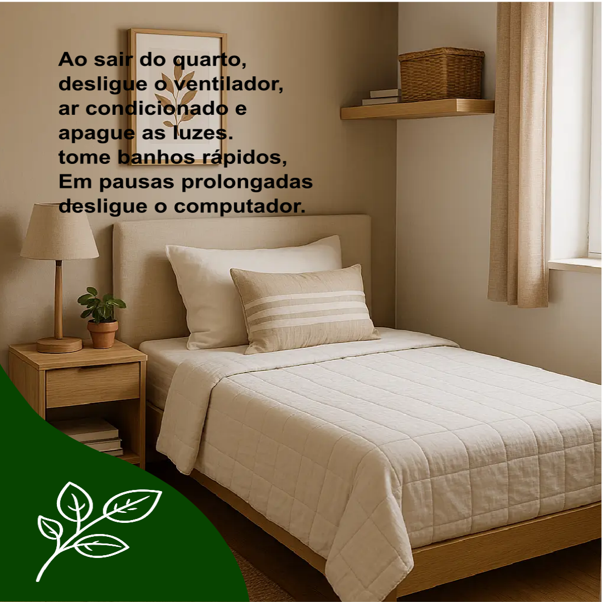
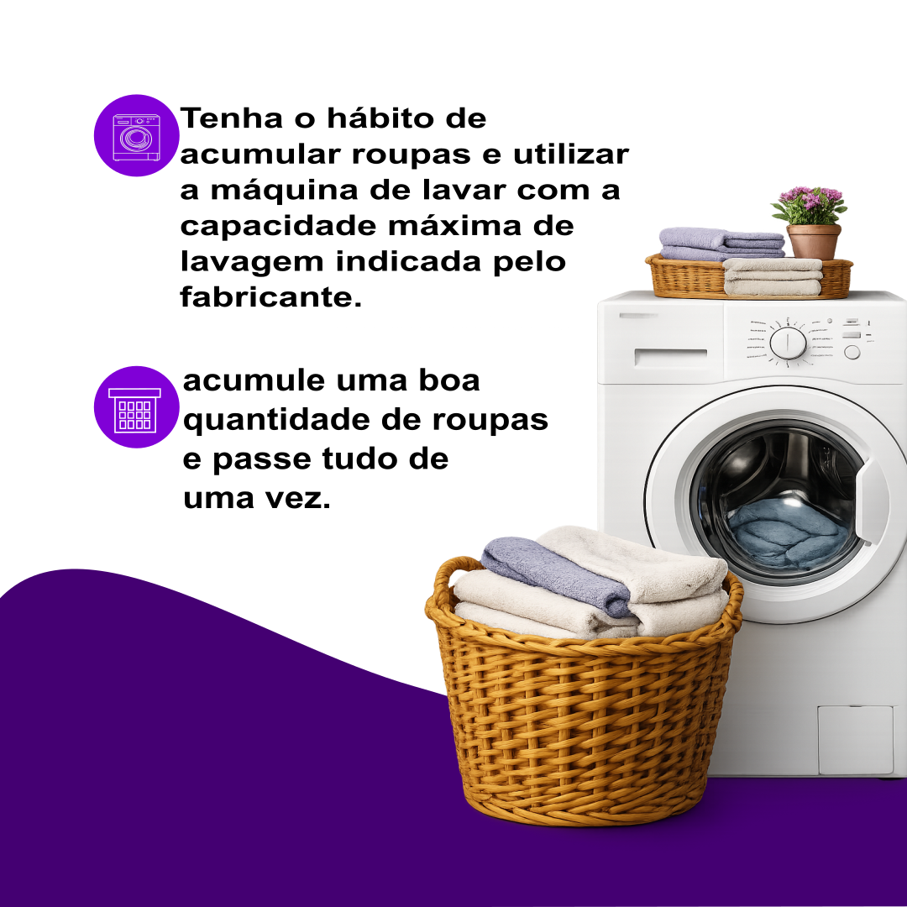
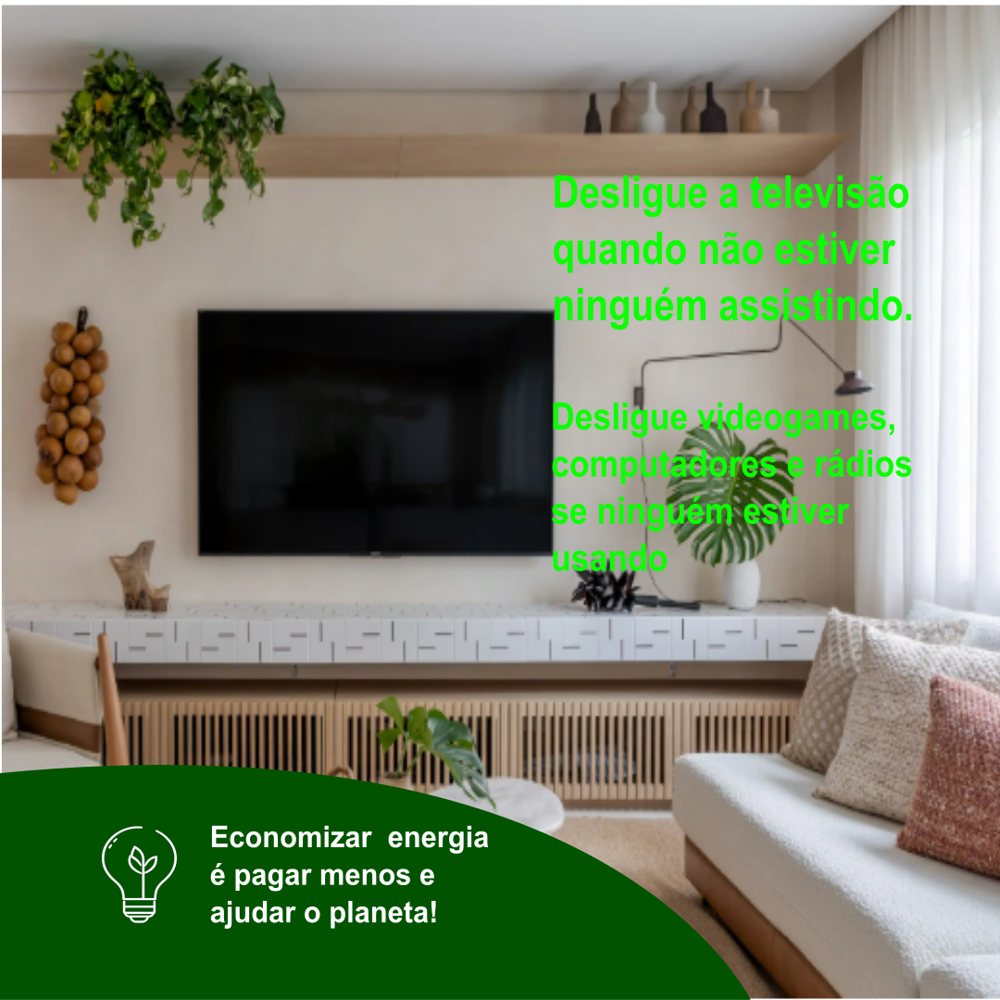
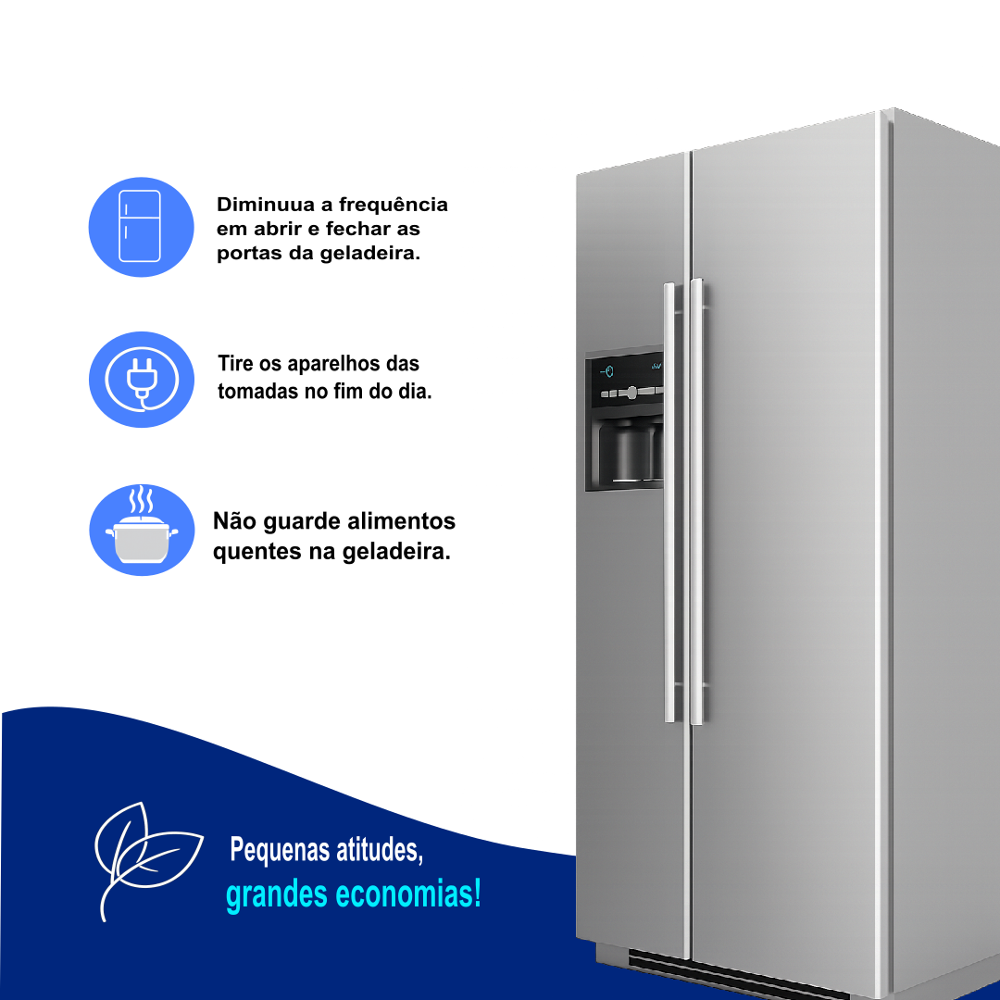
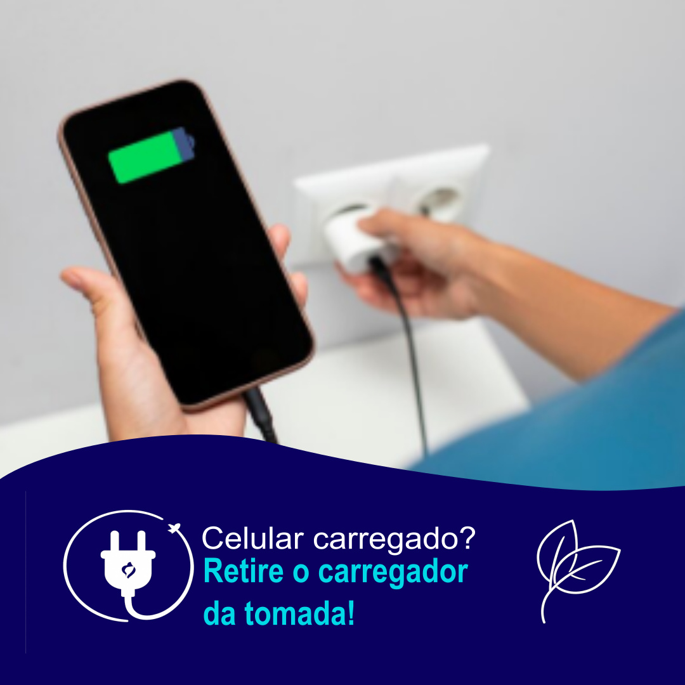
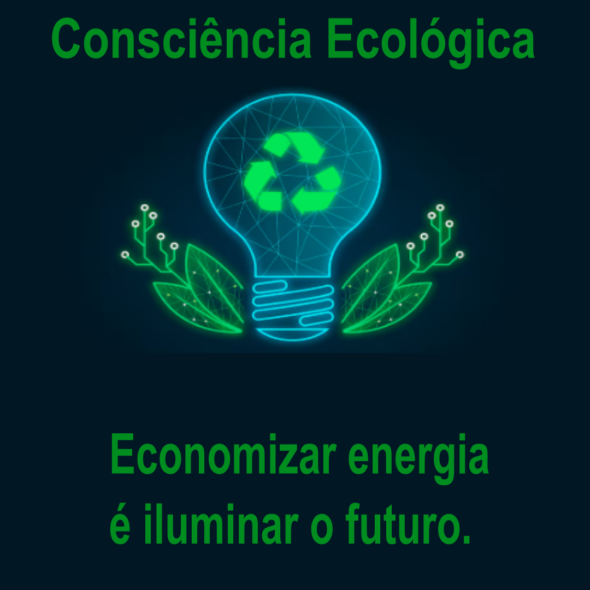

Nesta disciplina foram desenvolvidos cards utilizando a ferramenta Inkscape no formato para publicações do Instagram, com dimensões de 1080 × 1080 pixels. O objetivo foi produzir materiais informativos sobre o uso consciente da energia elétrica, apresentando diferentes dicas para reduzir o desperdício, economizar na conta de luz e contribuir para a preservação do meio ambiente.





